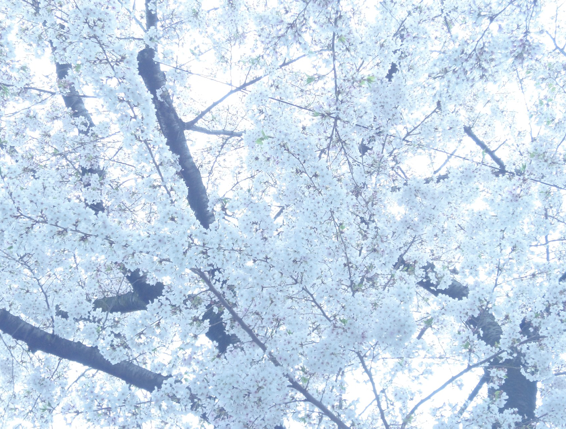

SakuraSaku
北の方にも福島にも桜が咲いたね よかったね
原子力発電所のすぐそばも咲いたのかな
咲いていると いいね
MEENA’s Diary
.6.May.2011 friday

さくら はすごいな
どんな悲しみも 呑みこんで 荘厳に咲き誇る
Nihon no Hana Sakura Saku
人間はとても小さくて弱いのに
なにもかもお見通しで
” 泣いていいんだよ ”
と 抱きしめてくれる
染井吉野は 女神様みたいだ
Sa ku ra
きれいだな
きれいだね
Sa ku ra Sa ku ra Sa ku ra
どうか 私たちの 傷ついた心を 洗いきよめてください
もう 涙しなくても いいように
やさしく やさしく つつんで ください
あなたの 光 で 癒され 歓び に つつまれますように
どうか 私たちを 赦してください
そして 心から 成長していくことが 出来ますように
誰のなかにも ある 愚かな部分
組織になると 自分がなにをやっているか わからなくなるのかな
本当に大切なものは なにか
みんな が憶いだしますように
そして みんなで 光の道を あるいていけますように
美しい道を あるいていけますように
どうか あなたの 愛 で つつんでください
癒してください
目覚めさせて ください
Sakura Saku
こんなことが起きても まだまだ狂った世の中
こうなることは 最初からわかりきっていたこと
知識あるひと達が なんどもなんども 警告してきた
いったい 人の命を なんだと思っているのだろう
こんなに惨いことを 戦争は人為的におこしているんだ
そして もっと 恐ろしい
なんて愚かなんだろう
核兵器がなくても
原子力発電所にミサイル撃ち込まれたら
終しまいだよ
子供がかんがえても わかることだよ
もう いいかげんに やめようよ
お金のために 大義名分のために
人の命を犠牲にし 母なる地球を 痛めつけるのは
こんなに美しい地球を メチャクチャにして
住めなくなったら 宇宙にいくの ？
この美しい星は 神様からの贈り物だよ
大地だって水だって空気だって
すべてみんなに与えられた 贈り物なんだよ
誰かが独占して 売ったり 好き放題破壊して いいものじゃないんだよ
人の命は ゲームのコマじゃないんだよ
尊い 尊い 光 なんだよ
みんな 神さまの子供 なんだよ
人にしたことは 自分に還ってくるんだよ
因果応報 って しらないの ？
宇宙の法則だよ
でもね 今 ならまだまにあうかも
こころからくいあらためて みんなのために ちきゅうのために
ちからをそそげば
かみさま ゆるしてくださるかもよ
あたらしいあたまになって あたらしいこころになって
みんなで ひかり のみちを あるこうよ
宇宙は 愛 だからね
まだ まにあうかも ね
どうか そのように なりますように
